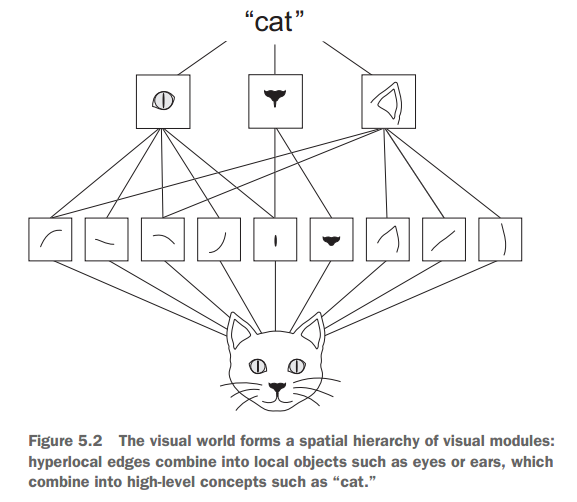

4. Convolution neural networks¶
4.1. Ví dụ¶
library(dplyr)
## Warning: package 'dplyr' was built under R version 3.4.4
##
## Attaching package: 'dplyr'
## The following objects are masked from 'package:stats':
##
## filter, lag
## The following objects are masked from 'package:base':
##
## intersect, setdiff, setequal, union
library(keras)
model <- keras_model_sequential() %>%
layer_conv_2d(filters = 32, kernel_size = c(3, 3), activation = "relu",
input_shape = c(28, 28, 1)) %>%
layer_max_pooling_2d(pool_size = c(2, 2)) %>%
layer_conv_2d(filters = 64, kernel_size = c(3, 3), activation = "relu") %>%
layer_max_pooling_2d(pool_size = c(2, 2)) %>%
layer_conv_2d(filters = 64, kernel_size = c(3, 3), activation = "relu")
model
## Model
## ___________________________________________________________________________
## Layer (type) Output Shape Param #
## ===========================================================================
## conv2d_1 (Conv2D) (None, 26, 26, 32) 320
## ___________________________________________________________________________
## max_pooling2d_1 (MaxPooling2D) (None, 13, 13, 32) 0
## ___________________________________________________________________________
## conv2d_2 (Conv2D) (None, 11, 11, 64) 18496
## ___________________________________________________________________________
## max_pooling2d_2 (MaxPooling2D) (None, 5, 5, 64) 0
## ___________________________________________________________________________
## conv2d_3 (Conv2D) (None, 3, 3, 64) 36928
## ===========================================================================
## Total params: 55,744
## Trainable params: 55,744
## Non-trainable params: 0
## ___________________________________________________________________________
model <- model %>%
layer_flatten() %>%
layer_dense(units = 64, activation = "relu") %>%
layer_dense(units = 10, activation = "softmax")
model
## Model
## ___________________________________________________________________________
## Layer (type) Output Shape Param #
## ===========================================================================
## conv2d_1 (Conv2D) (None, 26, 26, 32) 320
## ___________________________________________________________________________
## max_pooling2d_1 (MaxPooling2D) (None, 13, 13, 32) 0
## ___________________________________________________________________________
## conv2d_2 (Conv2D) (None, 11, 11, 64) 18496
## ___________________________________________________________________________
## max_pooling2d_2 (MaxPooling2D) (None, 5, 5, 64) 0
## ___________________________________________________________________________
## conv2d_3 (Conv2D) (None, 3, 3, 64) 36928
## ___________________________________________________________________________
## flatten_1 (Flatten) (None, 576) 0
## ___________________________________________________________________________
## dense_1 (Dense) (None, 64) 36928
## ___________________________________________________________________________
## dense_2 (Dense) (None, 10) 650
## ===========================================================================
## Total params: 93,322
## Trainable params: 93,322
## Non-trainable params: 0
## ___________________________________________________________________________
- Train model với MNIST
load("data/mnist.rda")
c(c(train_images, train_labels), c(test_images, test_labels)) %<-% mnist
train_images <- array_reshape(train_images, c(60000, 28, 28, 1))
train_images <- train_images / 255
test_images <- array_reshape(test_images, c(10000, 28, 28, 1))
test_images <- test_images / 255
train_labels <- to_categorical(train_labels)
test_labels <- to_categorical(test_labels)
model %>% compile(optimizer = "rmsprop",
loss = "categorical_crossentropy",
metrics = c("accuracy"))
model %>% fit(train_images,
train_labels,
epochs = 5,
batch_size = 64)
- Đánh giá mô hình
results <- model %>% evaluate(test_images, test_labels)
results
4.2. Convolution operator¶
Sự khác biệt lớn nhất giữa dense_layer và convolution_layer là
đối với dense_layer, patterns được phân tích dựa trên toàn bộ tập dữ
liệu đầu vào, do tất cả các điểm được kết nối và phân tích. Với
convolution_layer, pattern được phân tích dựa trên local_pattern.
Sau đó, pattern local sẽ được nhận diện trên toàn bộ dữ liệu.
Đặc trưng của convolution operator:
- Các pattern có thể được học tại tất cả các vị trí. Ví dụ, hình ảnh ở góc trái bức tranh được nhận diện, nó có thể được nhận diện ở tất cả các vị trí khác trong bức tranh. So với dense layer, mô hình sẽ phải học lại nếu pattern xuất hiện ở vị trí khác.
- Có thể học theo thứ tụ. Layer đầu tiên có thể phân rã và học các pattern nhỏ như góc, cạnh. Layer thứ hai sẽ học được các layer lớn hơn

Convolution operator tính toán dữ liệu trên 3D tensor, còn được gọi là “feature maps”. Feature map có 2 trục tọa độ (dài & rộng),và trục chiều sâu (depth). Với ảnh màu, depth có lượng dimension là 3, với ảnh đen trắng sẽ là 1 (ứng với giá trị của gray). Sau đó, mô hình chuyển thành ouput feature map cùng định dạng 3D tensor. Tuy nhiên, trong output feature map, sẽ không còn tồn tại trục depth (đại diện cho RGB trong ảnh) mà được gọi là filter - một loại output mới có chứa 1 loại thông tin. VD: có xuất hiện bông hoa tại khu vực tọa độ x, y của ảnh…
Ví dụ, trong trường hơp MNIST, input feature map là (28, 28, 1) trong khi output feature map là (26, 26, 32) - 32 filter trong input, mỗi filter có chứa 26 x 26 giá trị. Convolution có 2 tham số chính:
- Size of patch: Độ lớn của pixel khi học các pattern, thường là 3x3 hoặc 5x5
- Depth of feature map: Số lượng filter muốn mô hình học, trong trường hợp này là 32